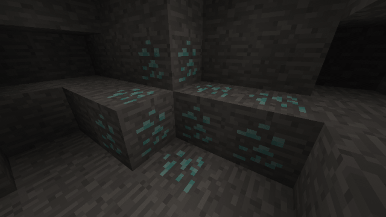

ロープは、高所から降りるときなどに便利な、簡易はしごのようなものです。
例えば、峡谷から一気に下層に降りたいときなどに便利です。
アイテムのロープを手に持って、真上に天井が存在するブロックに使用すると、下へ向かって最大6ブロック分のロープが設置されます。
ロープにカーソルを合わせて使用すると、そのロープからの延長設置をすることができます。
ロープに向かってジャンプしながら接触するか、スニークしながら接触すると、ロープに捕まりやすいかもしれません。
また、地面にまで延長しておくと、すり抜けることなく掴まることができます。
ロープはしごは、ロープをまとめてはしご状に加工したものです。
ロープよりも安全に昇り降りができるようになります。
ロープと同じく、真上に天井のあるブロックに使用すると、下へ向かって最大6ブロック分のロープはしごが設置されます。
スニークしながら真上に天井のある壁に使用すると、壁にロープはしごをくっつけたような状態で設置できます。
はしごと同じように掴まることができ、すり抜けることはありません。
また、ロープはしごの背面でも昇り降りすることができます。
CaveworldとCavernにのみ生成される鉱石です。
鉄以上のツルハシで破壊可能で、破壊すると、1～3個のケイブニウムをドロップします。
Caveworldにのみ生成される鉱石です。
鉄以上のツルハシで破壊可能で、破壊すると、1～3個の上質なケイブニウムをドロップします。
鉄以上のツルハシで破壊可能で、破壊すると、1個のアクアマリンをドロップします。
鉄以上のツルハシで破壊可能で、破壊すると、ランダムでいろんな不思議なことが起こります。
時にはアイテムがもらえたり、ステータスエフェクトをもらえたり、アクシデントが起こったり…
ランダムで得られるアイテムはどれが出やすいというのはありません。全てはあなたの運次第です。
ワールド(セーブデータ)を越えて中身を共有するインベントリにアクセスできるチェストです。
上質なケイブニウムブロックを8個、エンダーアイを1個使ってクラフトできます。
ユニバーサルチェストは、シルクタッチ付きのツールでのみ回収できます。
それ以外のもので破壊された場合は、そのまま消滅してしまいます。
他にも以下のブロックが追加されます。